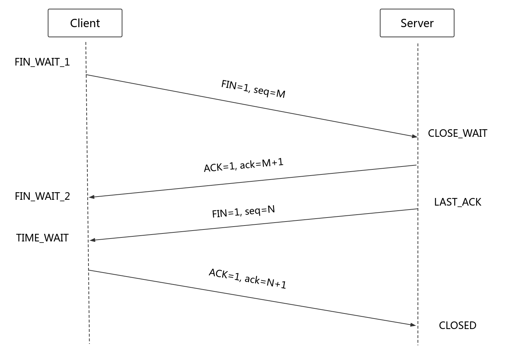

什么是四次挥手
Table of Contents
四次挥手的过程

- 第一次挥手：Client 将 FIN 置为1，发送一个序列号 seq = M（这里的 M 不是随机生成的，而是上次接收到来自服务端最后一个字节序列号 +1 的结果） 给 Server；进入
FIN_WAIT_1状态； - 第二次挥手：Server 收到 FIN 之后，发送一个 ACK = 1， acknowledge number = 收到的序列号 + 1 = M + 1 ；进入
CLOSE_WAIT状态。此时客户端已经没有要发送的数据了，但仍可以接受服务器发来的数据。 - 第三次挥手：Server 将 FIN 置 1，发送一个序列号 seq = N（来源同上面 M） 给 Client；进入
LAST_ACK状态； - 第四次挥手：Client 收到服务器的 FIN 后，进入
TIME_WAIT状态；接着将 ACK 置 1，发送一个 acknowledge number = 序列号 + 1 = N + 1 给服务器；服务器收到后，确认 acknowledge number 后，变为CLOSED状态，不再向客户端发送数据。客户端等待 2 * MSL（报文段最长寿命） 时间后，也进入CLOSED状态。完成四次挥手。
为什么不能把服务器发送的 ACK 和 FIN 合并起来，变成三次挥手（CLOSE_WAIT 状态意义是什么）？
分组交换中，分组到达目的地不是按序的，服务器收到客户端断开连接的请求时，可能还有一些数据没有发完，这时先回复 ACK，表示接收到了断开连接的请求。等到数据发完之后再发 FIN，断开服务器到客户端的数据传送。
如果第二次挥手时服务器的 ACK 没有送达客户端，会怎样？
客户端没有收到 ACK 确认，会重新发送 FIN 请求。
客户端 TIME_WAIT 状态的意义是什么？
第四次挥手时，客户端发送给服务器的 ACK 有可能丢失， TIME_WAIT 状态就是用来重发可能丢失的 ACK 报文。如果 Server 没有收到 ACK，就会重发 FIN，如果 Client 在 2 * MSL 的时间内收到了 FIN，就会重新发送 ACK 并再次等待 2MSL，防止 Server 没有收到 ACK 而不断重发 FIN。
MSL（Maximum Segment Lifetime），指一个片段在网络中最大的存活时间，2MSL 就是一个发送和一个回复所需的最大时间。如果直到 2MSL，Client 都没有再次收到 FIN，那么 Client 推断 ACK 已经被成功接收，则结束 TCP 连接。